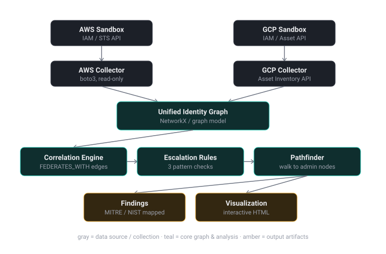

Architecture
AWS and GCP sandbox APIs feed two independent collectors into a unified identity graph, which flows through a correlation engine, escalation rule engine, and pathfinder, producing findings mapped to MITRE ATT&CK and NIST controls, plus an interactive visualization.

Why two collectors, not one
AWSCollector and GCPCollector each read
only their own cloud's API and know nothing about the other.
Neither one can, on its own, tell you when an identity it's
looking at also has a foothold somewhere else. That correlation
only happens once both graphs exist and get merged — which is
also why the merge step, not either collector individually, is
where the actual finding gets produced.
Confidence, not just presence
Every cross-cloud edge is scored HIGH, MEDIUM, or LOW based on how tightly its trust condition is actually scoped — not just whether a trust relationship exists at all. LOW-confidence edges are excluded from traversal entirely, so a name coincidence or a weak correlation can't manufacture a finding that isn't real.
Detection has two layers
A rule engine checks the merged graph for the three specific patterns shown on the home page — a federated identity landing directly on a privileged target without enough scoping. A separate, more general pathfinder can also trace multi-hop paths to a privileged node, though those don't carry the same severity or MITRE mapping the three named patterns do.